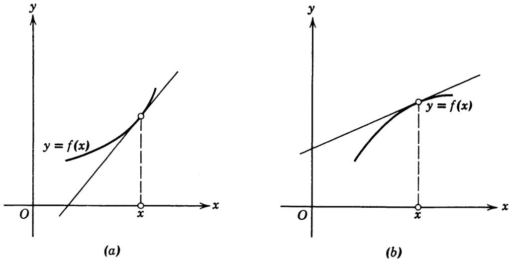
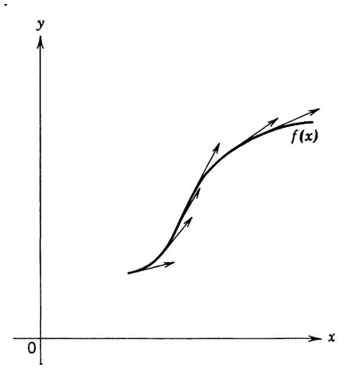
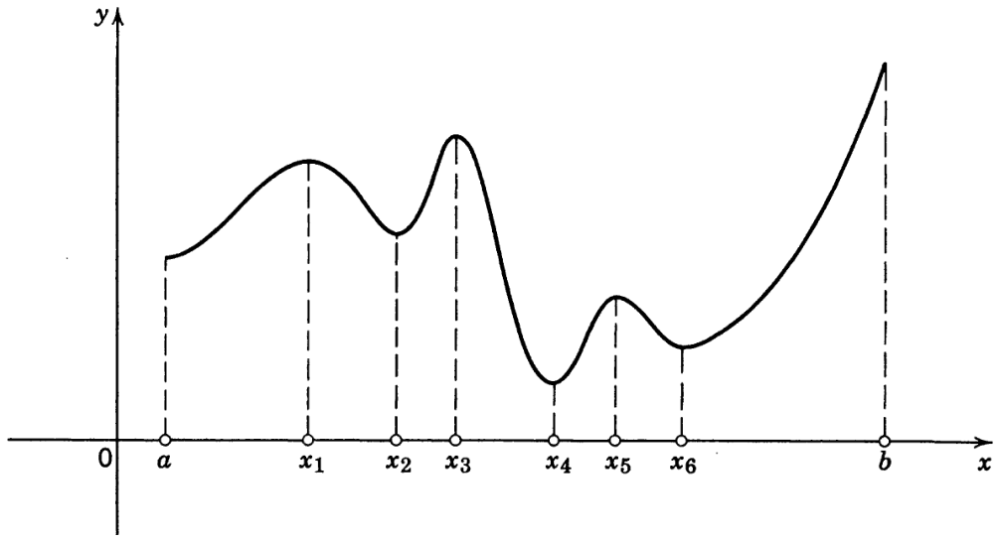
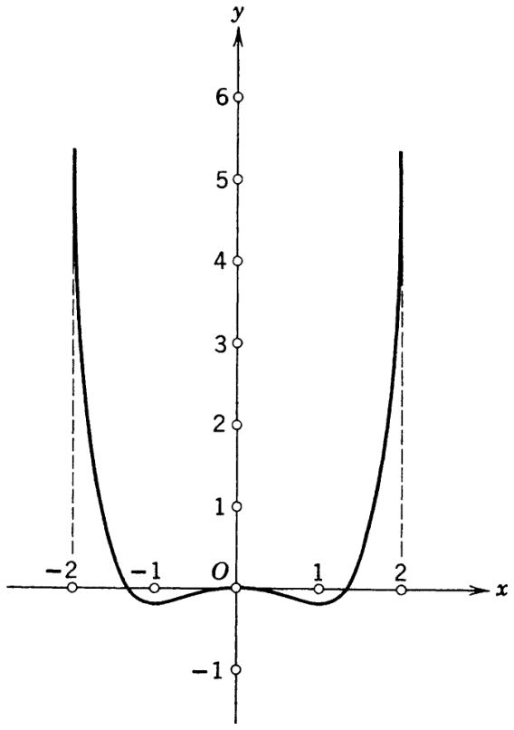
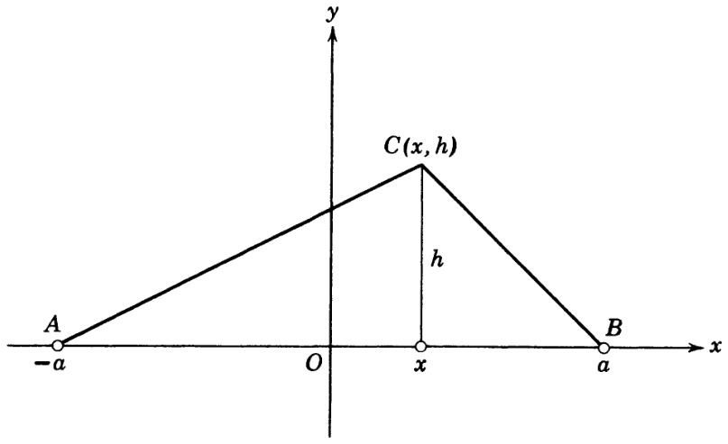
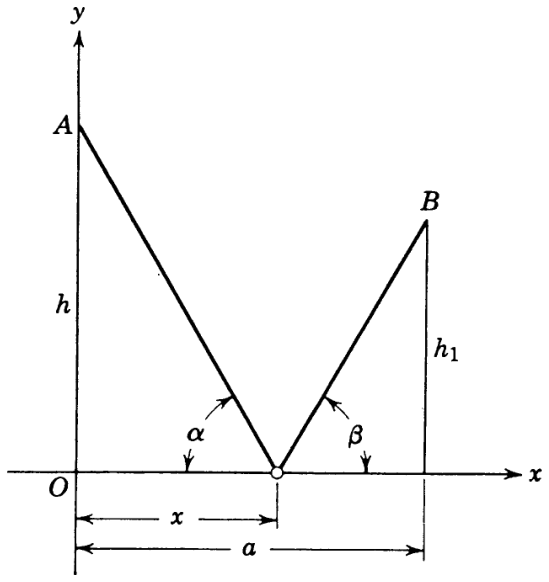
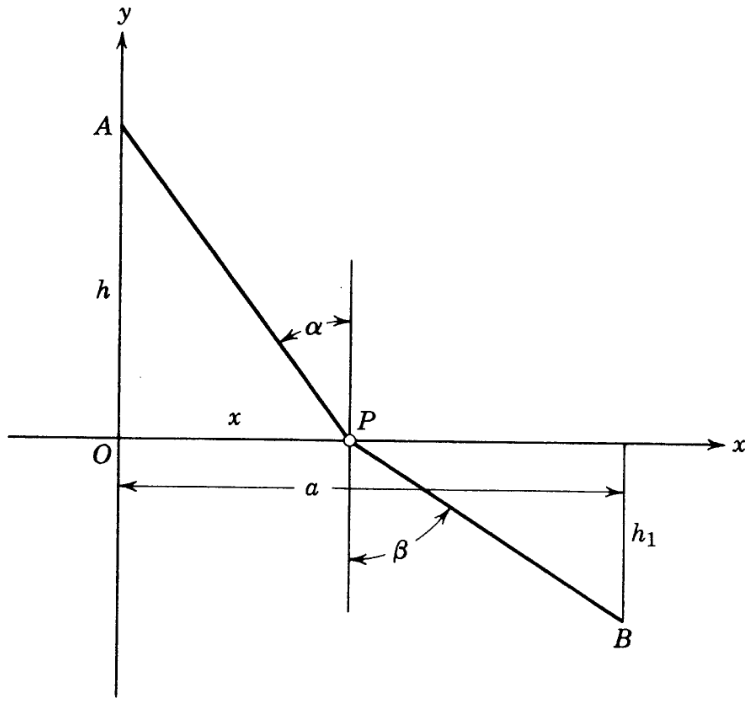
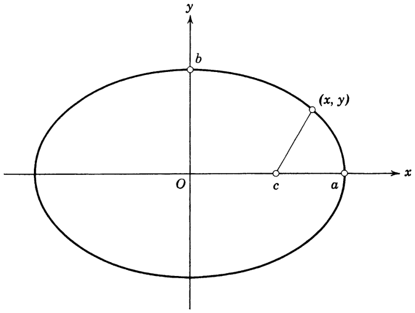

在微积分的许多应用中，我们首先考察函数的极大与极小，并从几何上讨论二阶导数。
a. 曲线的凸性与凹性
按定义，导数 f ′ ( x ) = d f ( x ) / d x f'(x)=df(x)/dx f ′ ( x ) = df ( x ) / d x y = f ( x ) y=f(x) y = f ( x ) f ′ ( x ) f'(x) f ′ ( x ) d f ′ ( x ) / d x = d 2 f ( x ) / d x 2 = f ′ ′ ( x ) df'(x)/dx=d^2f(x)/dx^2=f''(x) d f ′ ( x ) / d x = d 2 f ( x ) / d x 2 = f ′′ ( x ) f ( x ) f(x) f ( x ) 二阶导数 ，以下依此类推。若在某点 x x x f ′ ′ ( x ) f''(x) f ′′ ( x ) f ′ ( x ) f'(x) f ′ ( x ) x x x y = f ( x ) y=f(x) y = f ( x ) f ( x ) f(x) f ( x ) y = f ( x ) y=f(x) y = f ( x ) 凸的 。若 f ′ ′ ( x ) f''(x) f ′′ ( x ) 凹的 。因此，若 f ′ ′ ( x ) > 0 f''(x)>0 f ′′ ( x ) > 0 f ′ ′ ( x ) < 0 f''(x)<0 f ′′ ( x ) < 0
原注 1（第 236 页） 这里用到一个直观上显然的事实：连续函数 g ( x ) g(x) g ( x ) x 0 x_0 x 0 x 0 x_0 x 0 g g g g g g x 0 x_0 x 0 ε \varepsilon ε ∣ x − x 0 ∣ < δ |x-x_0|<\delta ∣ x − x 0 ∣ < δ ∣ g ( x ) − g ( x 0 ) ∣ < ε |g(x)-g(x_0)|<\varepsilon ∣ g ( x ) − g ( x 0 ) ∣ < ε g ( x 0 ) > 0 g(x_0)>0 g ( x 0 ) > 0 ε = 1 2 g ( x 0 ) \varepsilon=\tfrac12g(x_0) ε = 2 1 g ( x 0 ) g ( x 0 ) − g ( x ) ≤ ∣ g ( x ) − g ( x 0 ) ∣ < 1 2 g ( x 0 ) g(x_0)-g(x)\le|g(x)-g(x_0)|<\tfrac12g(x_0) g ( x 0 ) − g ( x ) ≤ ∣ g ( x ) − g ( x 0 ) ∣ < 2 1 g ( x 0 ) g ( x ) > 1 2 g ( x 0 ) > 0 g(x)>\tfrac12g(x_0)>0 g ( x ) > 2 1 g ( x 0 ) > 0

图 3.14 (a) 二阶导数为正；(b) 二阶导数为负。 拐点
只有在 f ′ ′ ( x ) = 0 f''(x)=0 f ′′ ( x ) = 0 拐点 ，相应的切线称为拐点切线 。

图 3.15 拐点。 最简单的例子是三次抛物线 y = x 3 y=x^3 y = x 3 x x x x = 0 x=0 x = 0 f ( x ) = sin x f(x)=\sin x f ( x ) = sin x f ′ ( x ) = d ( sin x ) / d x = cos x f'(x)=d(\sin x)/dx=\cos x f ′ ( x ) = d ( sin x ) / d x = cos x f ′ ′ ( x ) = d 2 ( sin x ) / d x 2 = − sin x f''(x)=d^2(\sin x)/dx^2=-\sin x f ′′ ( x ) = d 2 ( sin x ) / d x 2 = − sin x f ′ ( 0 ) = 1 f'(0)=1 f ′ ( 0 ) = 1 f ′ ′ ( 0 ) = 0 f''(0)=0 f ′′ ( 0 ) = 0 f ′ ′ ( x ) f''(x) f ′′ ( x ) x = 0 x=0 x = 0 x x x 45 45 45
但也可能出现这样的点：虽有 f ′ ′ ( x ) = 0 f''(x)=0 f ′′ ( x ) = 0 x x x f ′ ′ ( x ) f''(x) f ′′ ( x ) y = x 4 y=x^4 y = x 4 f ′ ′ ( x ) = 12 x 2 f''(x)=12x^2 f ′′ ( x ) = 12 x 2 x = 0 x=0 x = 0 x x x
b. 极大与极小。相对极值与驻点
若对于定义域内一切 x x x f ( ξ ) ≥ f ( x ) f(\xi)\ge f(x) f ( ξ ) ≥ f ( x ) ξ \xi ξ f ( x ) f(x) f ( x ) ξ \xi ξ 最大值 。¹ 同样，若对定义域内一切 x x x f ( ξ ) ≤ f ( x ) f(\xi)\le f(x) f ( ξ ) ≤ f ( x ) f f f ξ \xi ξ 最小值 。两者合称极值。
原注 1（第 238 页） 若定义域内所有异于 ξ \xi ξ x x x f ( ξ ) > f ( x ) f(\xi)>f(x) f ( ξ ) > f ( x ) ξ \xi ξ
例如，f ( x ) = 1 − x 2 f(x)=\sqrt{1-x^2} f ( x ) = 1 − x 2 − 1 ≤ x ≤ 1 -1\le x\le1 − 1 ≤ x ≤ 1 x = ± 1 x=\pm1 x = ± 1 x = 0 x=0 x = 0 − ∞ < x < ∞ -\infty<x<\infty − ∞ < x < ∞ f ( x ) = 1 / ( 1 + x 2 ) f(x)=1/(1+x^2) f ( x ) = 1/ ( 1 + x 2 ) 0 < x < ∞ 0<x<\infty 0 < x < ∞ f ( x ) = 1 / x f(x)=1/x f ( x ) = 1/ x
现在要找的是确定函数或曲线极值所在位置的方法。几何、力学、物理和其他领域中经常遇到这种问题，它是十七世纪推动微积分发展的主要因素之一。
微积分没有直接挑出函数 f ( x ) f(x) f ( x ) 相对极值点 ，真正的最大、最小值一定在这些点中取得。若把 f ( ξ ) f(\xi) f ( ξ ) ξ \xi ξ f ( x ) f(x) f ( x ) ξ \xi ξ f f f ξ \xi ξ α < x < β \alpha<x<\beta α < x < β ξ \xi ξ f f f ξ \xi ξ 绝对最大值或绝对最小值 （见图 3.16）。
原注 1（第 239 页） 严格地说，ξ \xi ξ ξ \xi ξ f f f x x x f ( ξ ) ≥ f ( x ) f(\xi)\ge f(x) f ( ξ ) ≥ f ( x )

图 3.16 定义在闭区间 [a,b] 上的函数。相对极小点为 a、x₂、x₄、x₆，相对极大点为 x₁、x₃、x₅、b。绝对最大值在 b 取得，绝对最小值在 x₄ 取得。 从几何上看，若不在定义区间的端点，相对极大点、极小点分别对应曲线的波峰和波谷。只看一眼图 3.16 就会发现，x 5 x_5 x 5 x 2 x_2 x 2
设 f ( x ) f(x) f ( x ) a ≤ x ≤ b a\le x\le b a ≤ x ≤ b ξ \xi ξ f ′ ( ξ ) = 0 f'(\xi)=0 f ′ ( ξ ) = 0 a < ξ < b a<\xi<b a < ξ < b f ′ ( ξ ) = 0 f'(\xi)=0 f ′ ( ξ ) = 0 a a a f ′ ( a ) f'(a) f ′ ( a ) b b b f ′ ( b ) f'(b) f ′ ( b )
切线水平的点，即方程 f ′ ( ξ ) = 0 f'(\xi)=0 f ′ ( ξ ) = 0 f f f 临界点 或驻点 。可微函数定义域内部的全部相对极值点都是驻点。因此，函数的绝对最大值或最小值，只能在它的临界点或定义域的端点上取得。 要确定绝对最大（最小）值，只须比较函数在各临界点与两个端点的值，选出其中最大的（最小的）即可。若 f f f
举个简单的例子。求 f ( x ) = 1 10 x 6 − 3 10 x 2 f(x)=\tfrac1{10}x^6-\tfrac3{10}x^2 f ( x ) = 10 1 x 6 − 10 3 x 2 − 2 ≤ x ≤ 2 -2\le x\le2 − 2 ≤ x ≤ 2 f ′ ( x ) = 6 ( x 5 − x ) / 10 = 0 f'(x)=6(x^5-x)/10=0 f ′ ( x ) = 6 ( x 5 − x ) /10 = 0 x = 0 , + 1 , − 1 x=0,+1,-1 x = 0 , + 1 , − 1
x x x − 2 -2 − 2 − 1 -1 − 1 0 0 0 1 1 1 2 2 2
f ( x ) f(x) f ( x ) 5.2 5.2 5.2 − 0.2 -0.2 − 0.2 0 0 0 − 0.2 -0.2 − 0.2 5.2 5.2 5.2
x = ± 1 x=\pm1 x = ± 1 x = 0 , ± 2 x=0,\pm2 x = 0 , ± 2 5.2 5.2 5.2 x = ± 1 x=\pm1 x = ± 1 − 0.2 -0.2 − 0.2

图 3.17 y = (x⁶ − 3x²)/10。 不用诉诸直观，也能用纯分析方法证明：若内点 ξ \xi ξ f f f f ′ ( ξ ) = 0 f'(\xi)=0 f ′ ( ξ ) = 0 f f f ξ \xi ξ h h h f ( ξ + h ) − f ( ξ ) f(\xi+h)-f(\xi) f ( ξ + h ) − f ( ξ )
f ( ξ + h ) − f ( ξ ) h ≤ 0 ( h > 0 ) , f ( ξ + h ) − f ( ξ ) h ≥ 0 ( h < 0 ) .
\frac{f(\xi+h)-f(\xi)}h\le0\quad(h>0),\qquad
\frac{f(\xi+h)-f(\xi)}h\ge0\quad(h<0).
h f ( ξ + h ) − f ( ξ ) ≤ 0 ( h > 0 ) , h f ( ξ + h ) − f ( ξ ) ≥ 0 ( h < 0 ) . h h h f ′ ( ξ ) f'(\xi) f ′ ( ξ ) ξ = a \xi=a ξ = a f ′ ( a ) ≤ 0 f'(a)\le0 f ′ ( a ) ≤ 0 f ′ ( a ) ≥ 0 f'(a)\ge0 f ′ ( a ) ≥ 0 b b b f ′ ( b ) ≥ 0 f'(b)\ge0 f ′ ( b ) ≥ 0 f ′ ( b ) ≤ 0 f'(b)\le0 f ′ ( b ) ≤ 0
刻画临界点的条件 f ′ ( ξ ) = 0 f'(\xi)=0 f ′ ( ξ ) = 0 y = x 3 y=x^3 y = x 3 x = 0 x=0 x = 0
下面的判据给出临界点何时为相对极大或极小点。它适用于连续函数 f f f f ′ f' f ′
定义域内点 ξ \xi ξ f ( x ) f(x) f ( x ) x x x f ′ ( x ) f'(x) f ′ ( x ) 具体说来，若在 ξ \xi ξ
为严格证明这一点，采用中值定理。先注意在 ξ \xi ξ ξ 1 < x < ξ \xi_1<x<\xi ξ 1 < x < ξ ξ < x < ξ 2 \xi<x<\xi_2 ξ < x < ξ 2 f ′ ( x ) f'(x) f ′ ( x ) f ′ f' f ′ ξ \xi ξ ξ 1 , ξ 2 \xi_1,\xi_2 ξ 1 , ξ 2 f ′ ( x ) f'(x) f ′ ( x ) h h h f ( ξ + h ) − f ( ξ ) = h f ′ ( ξ + θ h ) f(\xi+h)-f(\xi)=hf'(\xi+\theta h) f ( ξ + h ) − f ( ξ ) = h f ′ ( ξ + θ h ) ξ \xi ξ f ′ f' f ′ h f ′ ( ξ + θ h ) hf'(\xi+\theta h) h f ′ ( ξ + θ h ) h h h f ( ξ + h ) f(\xi+h) f ( ξ + h ) f ( ξ ) f(\xi) f ( ξ )
同时可见，在任何包含 ξ \xi ξ f f f f ′ f' f ′ ξ \xi ξ f ( ξ ) f(\xi) f ( ξ )
上述证明所依据的中值定理，在区间端点不可微时仍可使用，只须函数在其余内点可微。因此，即使 x = ξ x=\xi x = ξ y = ∣ x ∣ y=|x| y = ∣ x ∣ x = 0 x=0 x = 0 x > 0 x>0 x > 0 y ′ > 0 y'>0 y ′ > 0 x < 0 x<0 x < 0 y ′ < 0 y'<0 y ′ < 0 y = x 2 3 y=\sqrt[3]{x^2} y = 3 x 2 x = 0 x=0 x = 0 2 3 x − 1 / 3 \tfrac23x^{-1/3} 3 2 x − 1/3
要判明一个临界点 ξ \xi ξ 二阶导数 。由直观可知，若 f ′ ( ξ ) = 0 f'(\xi)=0 f ′ ( ξ ) = 0 f ′ ′ ( ξ ) < 0 f''(\xi)<0 f ′′ ( ξ ) < 0 f ′ ′ ( ξ ) > 0 f''(\xi)>0 f ′′ ( ξ ) > 0 f ( x ) , f ′ ( x ) f(x),f'(x) f ( x ) , f ′ ( x ) f ′ ′ ( ξ ) f''(\xi) f ′′ ( ξ ) f ′ ( ξ ) = 0 , f ′ ′ ( ξ ) > 0 f'(\xi)=0,\ f''(\xi)>0 f ′ ( ξ ) = 0 , f ′′ ( ξ ) > 0
f ′ ′ ( ξ ) = lim h → 0 f ′ ( ξ + h ) − f ′ ( ξ ) h = lim h → 0 f ′ ( ξ + h ) h > 0.
f''(\xi)=\lim_{h\to0}\frac{f'(\xi+h)-f'(\xi)}h=\lim_{h\to0}\frac{f'(\xi+h)}h>0.
f ′′ ( ξ ) = h → 0 lim h f ′ ( ξ + h ) − f ′ ( ξ ) = h → 0 lim h f ′ ( ξ + h ) > 0. 对绝对值充分小的非零 h h h f ′ ( ξ + h ) / h > 0 f'(\xi+h)/h>0 f ′ ( ξ + h ) / h > 0 f ′ ( ξ + h ) f'(\xi+h) f ′ ( ξ + h ) h h h ξ \xi ξ f ′ ( x ) f'(x) f ′ ( x ) ξ \xi ξ
若 f ′ ′ ( x ) f''(x) f ′′ ( x ) [ a , b ] [a,b] [ a , b ] 在 f ′ ( ξ ) = 0 f'(\xi)=0 f ′ ( ξ ) = 0 f ′ ′ ( x ) < 0 f''(x)<0 f ′′ ( x ) < 0 ξ \xi ξ f ′ ′ ( x ) > 0 f''(x)>0 f ′′ ( x ) > 0 ξ \xi ξ
事实上，若 f ′ ′ ( x ) < 0 f''(x)<0 f ′′ ( x ) < 0 f ′ f' f ′ ξ \xi ξ a ≤ x < ξ a\le x<\xi a ≤ x < ξ f ′ > 0 f'>0 f ′ > 0 ξ < x ≤ b \xi<x\le b ξ < x ≤ b f ′ < 0 f'<0 f ′ < 0 x ≠ ξ x\ne\xi x = ξ f ( x ) < f ( ξ ) f(x)<f(\xi) f ( x ) < f ( ξ ) ξ \xi ξ ξ \xi ξ f ′ ′ > 0 f''>0 f ′′ > 0
译者注 判断驻点时要分清两种“零”。f ′ ( ξ ) = 0 f'(\xi)=0 f ′ ( ξ ) = 0 f ′ ′ ( ξ ) = 0 f''(\xi)=0 f ′′ ( ξ ) = 0 x 4 x^4 x 4 x 3 x^3 x 3
例题
例 1。 在底边和面积给定的一切三角形中，求周长最小的一个。
取底边 A B AB A B x x x C C C h h h ( x , h ) (x,h) ( x , h ) 2 a 2a 2 a A C , B C AC,BC A C , BC
f ( x ) = ( x + a ) 2 + h 2 + ( x − a ) 2 + h 2 .
f(x)=\sqrt{(x+a)^2+h^2}+\sqrt{(x-a)^2+h^2}.
f ( x ) = ( x + a ) 2 + h 2 + ( x − a ) 2 + h 2 . 
图 3.18 由此得
f ′ ( x ) = x + a ( x + a ) 2 + h 2 + x − a ( x − a ) 2 + h 2 ,
f'(x)=\frac{x+a}{\sqrt{(x+a)^2+h^2}}+\frac{x-a}{\sqrt{(x-a)^2+h^2}},
f ′ ( x ) = ( x + a ) 2 + h 2 x + a + ( x − a ) 2 + h 2 x − a , f ′ ′ ( x ) = − ( x + a ) 2 [ ( x + a ) 2 + h 2 ] 3 + 1 ( x + a ) 2 + h 2 + − ( x − a ) 2 [ ( x − a ) 2 + h 2 ] 3 + 1 ( x − a ) 2 + h 2 = h 2 [ ( x + a ) 2 + h 2 ] 3 + h 2 [ ( x − a ) 2 + h 2 ] 3 .
\begin{aligned}
f''(x)&=\frac{-(x+a)^2}{\sqrt{[(x+a)^2+h^2]^3}}+\frac1{\sqrt{(x+a)^2+h^2}}\\
&\quad+\frac{-(x-a)^2}{\sqrt{[(x-a)^2+h^2]^3}}+\frac1{\sqrt{(x-a)^2+h^2}}\\
&=\frac{h^2}{\sqrt{[(x+a)^2+h^2]^3}}+\frac{h^2}{\sqrt{[(x-a)^2+h^2]^3}}.
\end{aligned}
f ′′ ( x ) = [( x + a ) 2 + h 2 ] 3 − ( x + a ) 2 + ( x + a ) 2 + h 2 1 + [( x − a ) 2 + h 2 ] 3 − ( x − a ) 2 + ( x − a ) 2 + h 2 1 = [( x + a ) 2 + h 2 ] 3 h 2 + [( x − a ) 2 + h 2 ] 3 h 2 . 立即可见，(1) f ′ ( 0 ) = 0 f'(0)=0 f ′ ( 0 ) = 0 f ′ ′ ( x ) f''(x) f ′′ ( x ) x = 0 x=0 x = 0
例 2。 在一条给定直线上求一点，使它到两个给定定点的距离之和最小。
设定点 A , B A,B A , B P P P P A + P B PA+PB P A + PB x x x
f ( x ) = x 2 + h 2 + ( x − a ) 2 + h 1 2 .
f(x)=\sqrt{x^2+h^2}+\sqrt{(x-a)^2+h_1^2}.
f ( x ) = x 2 + h 2 + ( x − a ) 2 + h 1 2 . 原注 1（第 244 页） 若 A , B A,B A , B P P P A B AB A B

图 3.19 反射定律。 由此得
f ′ ( x ) = x x 2 + h 2 + x − a ( x − a ) 2 + h 1 2 , f ′ ′ ( x ) = h 2 ( x 2 + h 2 ) 3 + h 1 2 [ ( x − a ) 2 + h 1 2 ] 3 .
f'(x)=\frac x{\sqrt{x^2+h^2}}+\frac{x-a}{\sqrt{(x-a)^2+h_1^2}},\qquad
f''(x)=\frac{h^2}{\sqrt{(x^2+h^2)^3}}+\frac{h_1^2}{\sqrt{[(x-a)^2+h_1^2]^3}}.
f ′ ( x ) = x 2 + h 2 x + ( x − a ) 2 + h 1 2 x − a , f ′′ ( x ) = ( x 2 + h 2 ) 3 h 2 + [( x − a ) 2 + h 1 2 ] 3 h 1 2 . 方程 f ′ ( ξ ) = 0 f'(\xi)=0 f ′ ( ξ ) = 0
ξ ξ 2 + h 2 = a − ξ ( ξ − a ) 2 + h 1 2 ,
\frac{\xi}{\sqrt{\xi^2+h^2}}=\frac{a-\xi}{\sqrt{(\xi-a)^2+h_1^2}},
ξ 2 + h 2 ξ = ( ξ − a ) 2 + h 1 2 a − ξ , 也就是 cos α = cos β \cos\alpha=\cos\beta cos α = cos β P A PA P A P B PB PB f ′ ′ ( x ) > 0 f''(x)>0 f ′′ ( x ) > 0
此题与光的反射定律密切相关。根据光学中的费马最短时间原理 ，光线在给定条件下从 A A A B B B A A A B B B
**例 3 折射定律。**¹ 设 A , B A,B A , B x x x x x x c 1 c_1 c 1 c 2 c_2 c 2 A A A B B B
原注 1（第 246 页） 前面的例题也可用初等几何处理，这一题若不用微积分就不容易解了。
显然，最省时的路径应当由两条线段组成，它们在 x x x P P P P A , P B PA,PB P A , PB h 2 + x 2 \sqrt{h^2+x^2} h 2 + x 2 h 1 2 + ( a − x ) 2 \sqrt{h_1^2+(a-x)^2} h 1 2 + ( a − x ) 2

图 3.20 折射定律。 f ( x ) = 1 c 1 h 2 + x 2 + 1 c 2 h 1 2 + ( a − x ) 2 .
f(x)=\frac1{c_1}\sqrt{h^2+x^2}+\frac1{c_2}\sqrt{h_1^2+(a-x)^2}.
f ( x ) = c 1 1 h 2 + x 2 + c 2 1 h 1 2 + ( a − x ) 2 . 求导得
f ′ ( x ) = 1 c 1 x h 2 + x 2 − 1 c 2 a − x h 1 2 + ( a − x ) 2 , f ′ ′ ( x ) = 1 c 1 h 2 ( h 2 + x 2 ) 3 + 1 c 2 h 1 2 [ h 1 2 + ( a − x ) 2 ] 3 .
\begin{aligned}
f'(x)&=\frac1{c_1}\frac{x}{\sqrt{h^2+x^2}}-\frac1{c_2}\frac{a-x}{\sqrt{h_1^2+(a-x)^2}},\\
f''(x)&=\frac1{c_1}\frac{h^2}{\sqrt{(h^2+x^2)^3}}+\frac1{c_2}\frac{h_1^2}{\sqrt{[h_1^2+(a-x)^2]^3}}.
\end{aligned}
f ′ ( x ) f ′′ ( x ) = c 1 1 h 2 + x 2 x − c 2 1 h 1 2 + ( a − x ) 2 a − x , = c 1 1 ( h 2 + x 2 ) 3 h 2 + c 2 1 [ h 1 2 + ( a − x ) 2 ] 3 h 1 2 . 由图 3.20 容易看出，方程 f ′ ( x ) = 0 f'(x)=0 f ′ ( x ) = 0
1 c 1 x h 2 + x 2 = 1 c 2 a − x h 1 2 + ( a − x ) 2 ,
\frac1{c_1}\frac{x}{\sqrt{h^2+x^2}}=\frac1{c_2}\frac{a-x}{\sqrt{h_1^2+(a-x)^2}},
c 1 1 h 2 + x 2 x = c 2 1 h 1 2 + ( a − x ) 2 a − x , 等价于 ( 1 / c 1 ) sin α = ( 1 / c 2 ) sin β (1/c_1)\sin\alpha=(1/c_2)\sin\beta ( 1/ c 1 ) sin α = ( 1/ c 2 ) sin β sin α sin β = c 1 c 2 \dfrac{\sin\alpha}{\sin\beta}=\dfrac{c_1}{c_2} sin β sin α = c 2 c 1
这一例题的物理意义仍来自光学的最短时间原理。两点之间的光线所循的是时间最短的路径。若 c 1 , c 2 c_1,c_2 c 1 , c 2 斯涅耳折射定律 的一种表述。
例 4。 给定椭圆长轴上的一点，求椭圆上与它距离最近的点（图 3.21）。

图 3.21 椭圆上到长轴上给定点距离最小的点。 将椭圆写成 x 2 / a 2 + y 2 / b 2 = 1 x^2/a^2+y^2/b^2=1 x 2 / a 2 + y 2 / b 2 = 1 b < a b<a b < a ( c , 0 ) (c,0) ( c , 0 ) ( x , y ) (x,y) ( x , y ) ( c , 0 ) (c,0) ( c , 0 )
d = ( x − c ) 2 + b 2 ( 1 − x 2 / a 2 ) , − a ≤ x ≤ a .
d=\sqrt{(x-c)^2+b^2(1-x^2/a^2)},\qquad -a\le x\le a.
d = ( x − c ) 2 + b 2 ( 1 − x 2 / a 2 ) , − a ≤ x ≤ a . 函数 f ( x ) = d 2 f(x)=d^2 f ( x ) = d 2 f ′ ′ > 0 f''>0 f ′′ > 0 f f f x x x d d d f f f x = c / ( 1 − b 2 / a 2 ) x=c/(1-b^2/a^2) x = c / ( 1 − b 2 / a 2 ) d d d c c c
d = b 1 − c 2 a 2 − b 2 , ∣ c ∣ ≤ a ( 1 − b 2 a 2 ) , d = a − ∣ c ∣ , ∣ c ∣ ≥ a ( 1 − b 2 a 2 ) .
\begin{aligned}
d&=b\sqrt{1-\frac{c^2}{a^2-b^2}},&& |c|\le a\left(1-\frac{b^2}{a^2}\right),\\
d&=a-|c|,&& |c|\ge a\left(1-\frac{b^2}{a^2}\right).
\end{aligned}
d d = b 1 − a 2 − b 2 c 2 , = a − ∣ c ∣ , ∣ c ∣ ≤ a ( 1 − a 2 b 2 ) , ∣ c ∣ ≥ a ( 1 − a 2 b 2 ) .